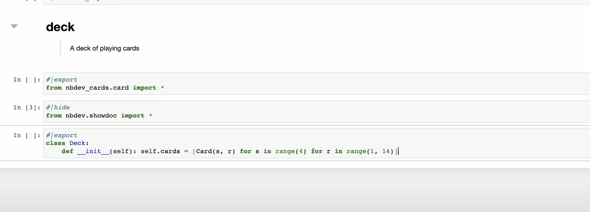

from fastcore.all import LCore import for prompt maker
Best practice to use the prompt
Basic Imports
L
L (items=None, *rest, use_list=False, match=None)
Behaves like a list of items but can also index with list of indices or masks
H1
H1 (*c:fastcore.xml.FT|str, cls:enum.Enum|str|tuple=(), **kwargs)
H1 with styling and appropriate size
| Type | Default | Details | |
|---|---|---|---|
| c | fastcore.xml.FT | str | Contents of H1 tag (often text) | |
| cls | enum.Enum | str | tuple | () | Classes in addition to H1 styling |
| kwargs | VAR_KEYWORD | ||
| Returns | FT | H1(…, cls=‘uk-h1’) |
Initializing app with live debug mode.
Basic components and temp for import
apply_preset
apply_preset (preset_type)
code
generate_prompt_content
generate_prompt_content (criteria, components, model='openai/gpt-4o')
parse_llm_response
parse_llm_response (content)
index page
get
get (preset:str='')
get_progress
get_progress (session_id:str)
generate
generate (request)
@rt("/generate", methods=["POST"])
async def generate(request):
form_data = await request.form()
criteria,components,model = form_data.get("criteria", ""),form_data.getlist("components"),form_data.get("model", "gpt-3.5-turbo")
role_text,task_text,format_text,examples_text = form_data.get("role_text", ""),form_data.get("task_text", ""),form_data.get("format_text", ""),form_data.get("examples_text", "")
if not criteria.strip(): return Div("Please enter some criteria first!", cls='text-red-500')
session_id = str(uuid.uuid4())
progress_state[session_id] = {"progress": 10, "done": False}
form_json = json.dumps({"criteria": criteria, "components": components, "model": model, "role_text": role_text, "task_text": task_text, "format_text": format_text, "examples_text": examples_text, "session_id": session_id})
return Div(Progress(value=10, hx_get=f"/progress/{session_id}", hx_trigger="load, every 500ms", hx_swap="outerHTML"), Div(id="final-output", hx_post=f"/generate-result", hx_trigger="load delay:100ms", hx_vals=form_json))generate_result
generate_result (request)
